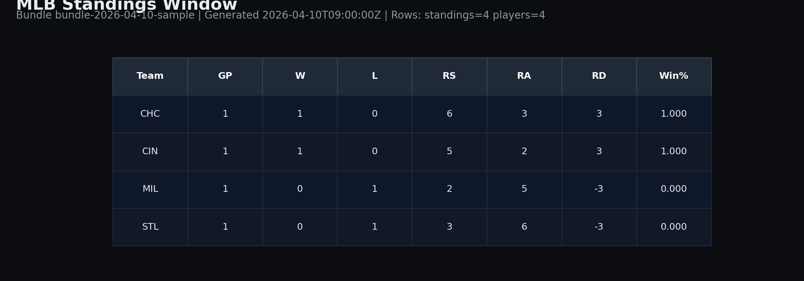
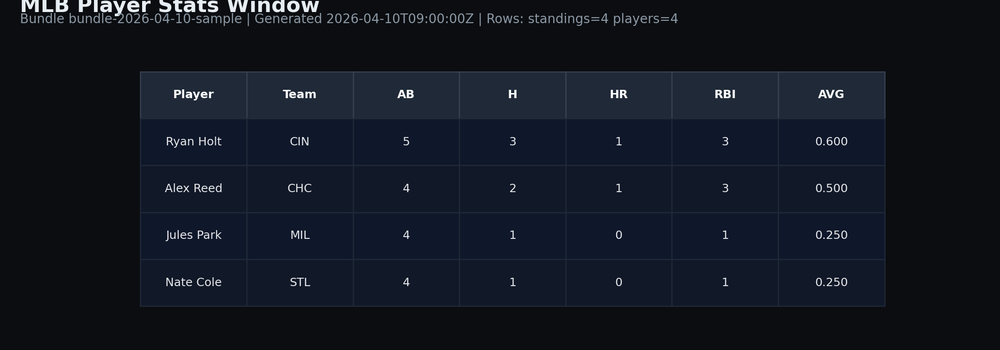

Daily Build Update: Luna MLB Analytics Core public launch proof
Published Luna-MLB-Analytics-Core with an offline-first ingestion architecture, deterministic derivations, and a local dashboard path. This pass also generated visual proof artifacts for public verification.
What shipped
- Public repo structure and sanitized docs for recruiter-facing review.
- Offline ingestion contract:
external collector -> bundle drop -> local import. - Derived team/player metrics and local dashboard wiring.
- Release tags:
v0.1.0andv0.1.1.
Proof run
- Smoke ingest result:
already_imported(idempotent behavior confirmed). - Derivation result: 4 teams, 4 players.
- Smoke dashboard query result: top team = CHC (1-0).
Raw proof snapshot: pipeline_proof.json
Visual representation
Current standings window generated from the latest Luna-exported bundle:

Current player stats window generated from the same export:

Refresh metadata: latest.json